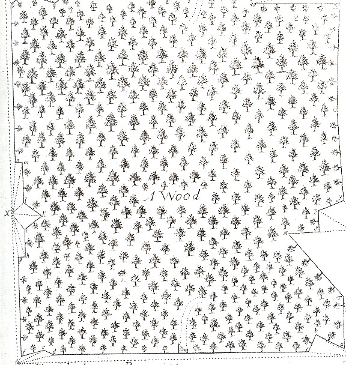

Thursday, November the 19th, 2009
back to: title, date or indexes
For many of us, there comes a time when we may need to consult the Woohoohoodiwoo Woman about some matter of psychomagickal significance. We might seek answers to questions such as;
– What is the difference between good wool and bad wool?
– Is “David Carpenter” an appropriate name for my cat?
– Did a part of my tulpa perish when the airship Hindenburg exploded in flames as it attempted to dock with its mooring mast on Thursday 6 May 1937?
But to consult with the Woohoohoodiwoo Woman, we first have to find her, and of course she lives all alone in her magick and dilapidated cottage somewhere in the densest part of the dark, dark woods. So before hiking out there, in the night, without a map, wouldn't it be great if we could somehow practise seeking the Woohoohoodiwoo Woman in the comfort of our own non-magick and undilapidated homes?
Well, now we can! The new board game Pore Over A Diagram Of The Dark, Dark Woods And See If You Can Spot The Woohoohoodiwoo Woman provides hours of fun and frolic for all the family. Just print out the diagram of the dark, dark woods below, paste it on to a board, lay the board flat on your floor, and pore over it, with both eyes, until you spot the Woohoohoodiwoo Woman. Then, when you eventually need to hike out to the real dark, dark woods, on a real storm-wracked night, to find the real Woohoohoodiwoo Woman, you will be mentally, physically, magickally, and psychically prepared. I think it's another triumph for the toy-and-board-game manufacturing community!

Picture courtesy of the splendid Ptak Science Books blog.